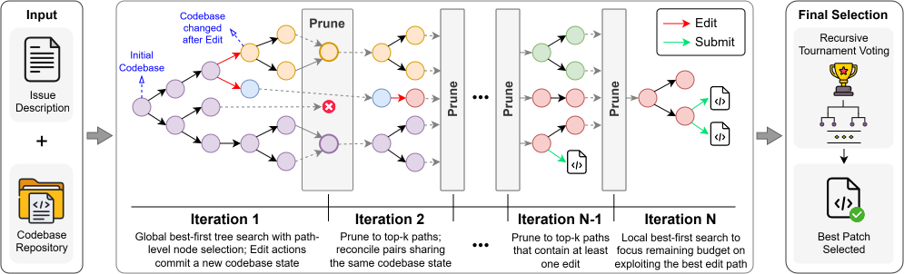

Scaling Coding Agents through Iterative Tree Search
Give a coding agent a bigger test-time budget and its resolve rate soon flattens: from budget 30 to 50, mini-SWE-agent gains 1.6 points and the tree-search agent SWE-Search only 0.6. Long debugging sessions produce trajectories whose partial progress must be preserved, compared and reused, and naive branching wastes the budget instead.
SWE-Xplorer splits the budget into iterations of a repeatable cycle, and keeps improving over the same range: 54.6% → 61.4%.
Within each iteration, path-level best-first search extends promising trajectories. At the iteration boundary, compatible paths exchange evidence and the frontier is compressed to seed the next iteration. A final recursive tournament compares the patches gathered across the whole search.
Test-time scaling is a promising way to improve LLM-based coding agents. However, long-horizon software repair produces extended trajectories whose partial progress must be preserved, compared, and reused; simply adding steps or branches can yield diminishing returns. We present SWE-Xplorer, an iterative tree-search framework built around a repeatable explore–reconcile–prune cycle. Within each iteration, path-level best-first selection extends promising trajectories; at the iteration boundary, compatible paths exchange evidence and the frontier is compressed to seed the next iteration. This bounded design lets the search use larger test-time budgets while repeatedly consolidating its most promising progress; end patch selection then compares candidates accumulated across the full search. On SWE-bench Verified (gpt-5-mini), increasing the test-time budget from 30 to 50 improves SWE-Xplorer from 54.6% to 61.4%, while the prior tree-search framework SWE-Search improves from 54.2% to 54.8%. SWE-Xplorer also has lower average cost and runtime than SWE-Search; at budget 50, the reductions are 64.9% and 32.2%, respectively. It achieves a higher resolved rate than strong single-trajectory agents—Claude Code and OpenHands—while costing less than either. Relative to its single-trajectory backbone (mini-SWE-agent), SWE-Xplorer improves resolved rate with all three evaluated models on both SWE-bench Verified and SWE-bench Multilingual. Together, these results show that iteration-based search can turn additional test-time compute into continued gains for long-horizon coding agents.
As the budget grows, the search must rank more paths, preserve more evidence and compare more patches. Each requirement has its own failure mode.
Action-level best-first search scores the newest action alone. One skipped file inspection can leave an otherwise correct repair strategy unexpanded, however large the budget.
Without pruning, the frontier keeps growing and the budget goes into many shallow, half-explored paths instead of following one strategy to completion.
Two investigations can reach the same codebase state with complementary clues about the bug. Keeping only the higher-scoring one discards the other's evidence.
Submitting early discards patches found later; running out of budget without a submission wastes good edits; trusting one noisy reward score picks the wrong one.

A miniature SWE-Xplorer run with two iterations and top-3 pruning. Step through it, or press play.
Full 500-task SWE-bench Verified and 300-task SWE-bench Multilingual, three model families. Hover the charts for exact values, or switch any chart to a table.
Every run behind these numbers, with logs, trajectories and patches, is in mahirlabibdihan/SWE-Xplorer-Experiments.
SWE-Xplorer ships with a local web GUI and a VS Code extension: point it at a git repository, describe a change, and watch the tree grow live.
An animated preview of the local GUI, replaying a typical run: search, backtrack, reconcile, prune, tournament, review.
$ git clone --recurse-submodules https://github.com/mahirlabibdihan/SWE-Xplorer.git $ cd SWE-Xplorer && uv sync --extra dev $ uv run python scripts/swe_xplorer.py # opens http://127.0.0.1:8765